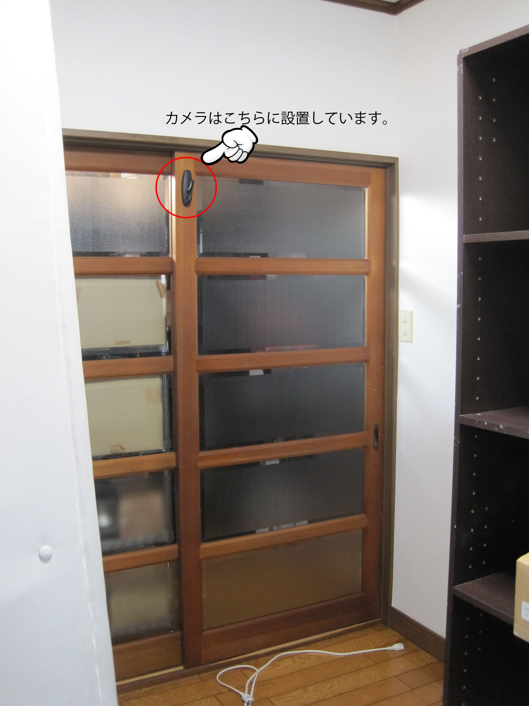
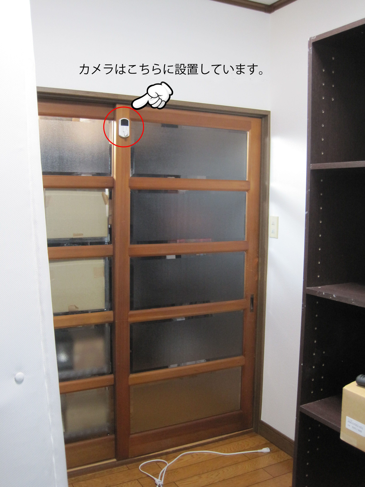
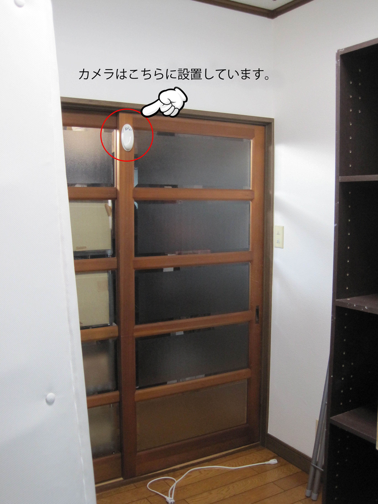
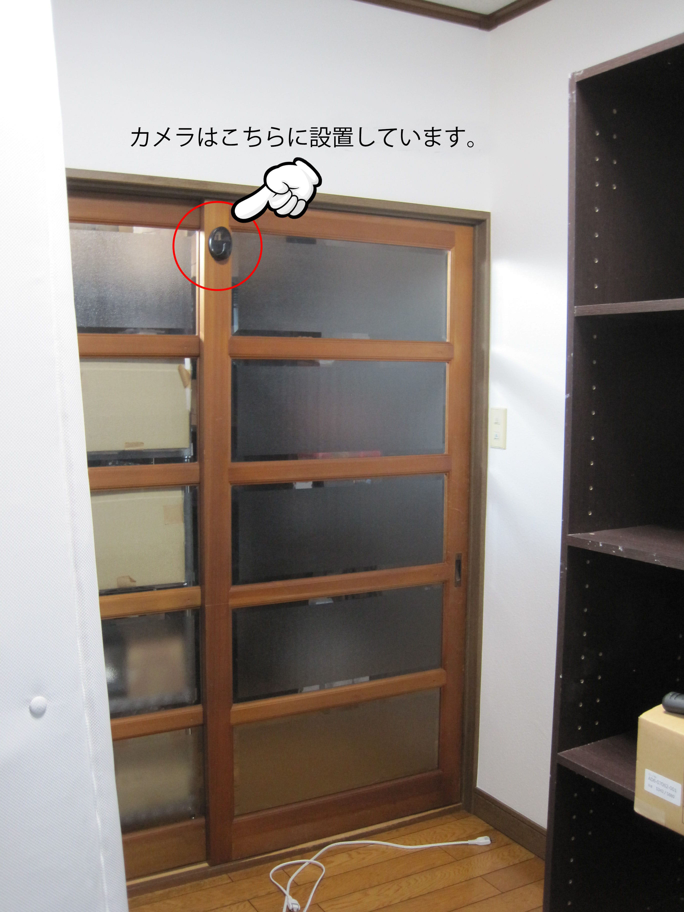
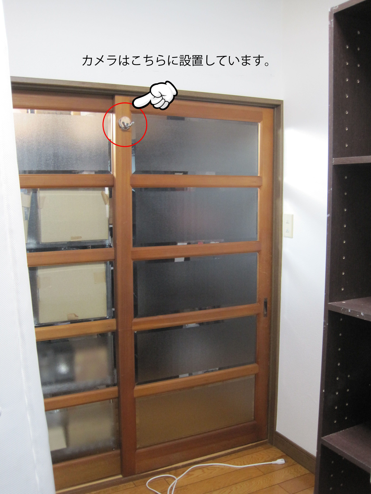

実際に取り付けて撮影してみました～ハンガー、フック型カメラ編～！

ここ最近盛り上がっているハロウィンも終わり、いよいよ冬将軍がやってきます←古い！
一気にクリスマスモード全開で巷はきらびやかなイルミネーションでわくわくします！さて皆様いかがお過ごしですか？

今回は前回好評だった、この企画！
「実際に取り付けて撮影してみました！
～ハンガー、フック型カメラ編～」です！
前回は火災報知器を実際に天井に取り付けて撮影したものを商品別でご紹介したブログをUPしましたが、皆様ご覧いただけましたでしょうか。
今回は同じくお部屋に設置することが多いハンガー、フック型の商品を
実際に取り付けて撮影してみます！
当店で販売しているハンガー・フック型カメラは
SPH-1、SPH-2、SPH-I、SPH-Sシリーズ、SPH-H.264の5種類！
（場合によっては品切れしている場合もございます。ご了承ください・・・）
全ての商品を実際に壁に設置し、それぞれ撮影を行いました。
床からの高さは1m70㎝で、設置している場所は写真にてご確認ください！
では、さっそくご覧ください↓
【SPH-1】(撮影はSPH-1Bを使用しました。)
【SPH-1】設置場所

【SPH-1】撮影動画
【SPH-2】(撮影はSPH-2Wを使用しました。)
【SPH-2】設置場所

【SPH-2】撮影動画
上記の2商品は同じ1280*960の解像度であるものの画角が少しSPH-2の方が広角に映っているのがわかりますか？
同じ場所に設置しているのにSPH-2の方が遠目から撮っているように窓も小さく、なにより右下にお花が映っていますよね！
同じ解像度でも見え方が違うので商品を選ぶときに参考にしてみてください。
【SPH-H.264】
【SPH-H.264】設置場所

【SPH-H.264】撮影動画
【SPH-I】(撮影はSPH-IBを使用しました。)
【SPH-I】設置場所

【SPH-I】撮影動画
※充電が少なく、ノイズが入っておりますが通常ではノイズは入りませんのでご安心ください！
上記の2商品も同じ1280*720の解像度ですが、SPH-Iの方が若干ではありますが広角に映っていますね！
一方のSPH-H.264はその名の通りH.264対応なので高画質で撮影が可能です。
【SPH-Sシリーズ】(撮影はSPH-Sを使用しました。)
【SPH-Sシリーズ】設置場所

【SPH-Sシリーズ】撮影動画
SPH-Sシリーズは1920*1080の解像度で画角も少し広角に撮影できる商品です。
（リモコンで操作する商品が多い中、当商品は本体のボタンで操作できるタイプとなっています。）
以上ハンガー、フック型の５つの商品をご紹介しましたが、いかがでしたか？イメージはわきましたでしょうか。
ハンガー、フック型は火災報知器型とは違い、設置した前方を撮影するものになります。
設置の仕方によって幅広い用途にお使いいただけるので、参考になればうれしいです！
今回紹介したハンガー、フック型の商品詳細はこちら
【SPH-1】
SPH-1W(白)
SPH-1B(黒)
【SPH-2】
SPH-2W(白)
SPH-2B(黒)
SPH-H.264
【SPH-I】
SPH-IW(白)
SPH-IB(黒)
【SPH-Sシリーズ】
SPH-S(シルバー)
SPH-MB(マットブラック)
商品ごとに機能などが違ってくるので、ショップのページで比較しながら用途にあった商品を見つけてくださいね！
今回のブログはいかがでしたか？
こういう検証もお願いしますというリクエストもありましたら
いつでもご連絡下さい！出来うる限りスタッフがお答えします。
メールやお問合せフォームからは24時間お問い合わせを受付中！
また、お電話でのお問い合わせも時間は限られておりますが受付中です！
当店スタッフが、誠意を持って対応致します・・！頑張ります・・！

ご相談・ご質問はこちらから!!（店舗サイトのお問合せページへ飛びます）
mail：shop@spy-online.jp
tel：042-719-3319 (対応時間10：00～12：00、13：00～17：00)
それでは今回はこの辺で・・
また近々お会いしましょう・・！(＾ ＾)